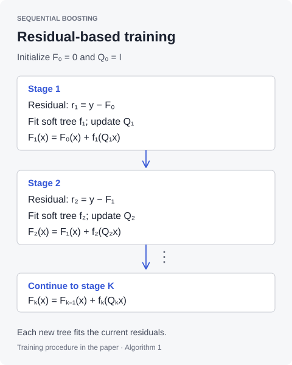

01 / TRANSFORM
Linear feature transformation
Learn a linear map of the original features, so representation learning happens within model fitting.
IEEE Signal Processing Letters · Vol. 33 · 2026
Soft Gradient Boosting with Learnable Feature Transforms for Sequential Regression
Department of Electrical and Electronics Engineering · Bilkent University
BSDT-Q integrates learnable linear feature transforms into soft gradient boosting for sequential regression with limited training data and high-dimensional inputs.

Lagged values, rolling statistics, and covariates can create a rich input space. But when observations are scarce, many of those features may be redundant. Searching over feature subsets becomes expensive, and a flexible predictor can overfit.
BSDT-Q puts a learnable linear map Q inside a soft-tree boosting framework. The transform mixes and reweights the inputs, while the trees capture nonlinear relationships. Because soft routing is differentiable, the prediction loss can also train the representation.
01 / TRANSFORM
Learn a linear map of the original features, so representation learning happens within model fitting.
02 / ROUTE
Replace hard branches with probabilistic gates. Each leaf contributes according to its path probability.
03 / OPTIMIZE
Differentiate through the tree to adjust the transform and predictor, then combine the tree outputs.
A soft tree returns a weighted sum of its leaf values. The weights come from products of gating probabilities along the paths to those leaves. This makes the output differentiable with respect to the transformed input—and therefore with respect to Q.
Linear and nonlinear transforms. A linear map keeps the transform lightweight in a setting with limited data. The paper also considers differentiable nonlinear transforms; the BSDT-MLP ablation tests that added flexibility.
Paper and implementation. Algorithm 1 describes fitting trees to residuals and updating Q at each boosting round. This checkout implements the additive blocks as one PyTorch module, trained jointly through the summed prediction loss. The code does not expose a separate stagewise residual-fitting loop.
The published evaluation compares BSDT-Q with six forecasting baselines and two ablations. It reports the lowest test MSE on M4 quarterly, Weather, Exchange, ETTm2, and the synthetic benchmark.
Relative MSE reduction: 100 × (1 − BSDT-Q / comparison). Longer bars indicate a larger reduction. “Strongest baseline” includes both ablations. Percentages use the rounded published values.
| Model | M4 | Weather | Exchange | ETTm2 | Synthetic |
|---|---|---|---|---|---|
| BSDT-Q | 0.564 | 6.90e-5 | 4.95e-4 | 4.34e-3 | 1.14 |
| BSDT-MLP | 0.924 | 8.27e-5 | 1.95e-3 | 1.01e-2 | 1.22 |
| CatBoost | 0.997 | 1.22e-4 | 3.99e-3 | 6.41e-3 | 1.46 |
| LSTM | 0.661 | 1.54e-4 | 1.71e-3 | 5.85e-3 | 1.28 |
| Lasso | 0.760 | 2.81e-4 | 7.74e-3 | 1.11e-2 | 1.26 |
| LightGBM | 0.848 | 1.10e-4 | 8.23e-3 | 6.92e-3 | 1.71 |
| Random Forest | 0.749 | 9.88e-5 | 1.60e-3 | 8.87e-3 | 1.32 |
| SDT | 0.902 | 1.28e-4 | 5.91e-4 | 1.01e-2 | 1.26 |
| XGBoost | 0.774 | 1.00e-4 | 9.19e-4 | 1.06e-2 | 1.43 |
Source: published article, Table II. Reported paper results; these experiments were not rerun for this site. Targets have dataset-specific scales, so raw MSE values should be compared within a dataset.
The paper’s reproducibility package is archived as a versioned Code Ocean capsule. Use that release for its preserved code and execution environment, and this GitHub repository to explore the implementation.
Huseyin Karaca and Suleyman Serdar Kozat · 2025
Open reproducibility capsule ↗The capsule's identity and version are verified against DataCite registration metadata. The archive was not re-executed while preparing this page.
Install dependencies from requirements.txt, configure dataset cache paths, then run the clean_*.py experiments. The synthetic runner creates its own data; the real-data runners use datasetsforecast. clean_tables.py runs or loads cached experiments and exports LaTeX tables.
The convenience requirements are unpinned. Some settings differ between the published text and this checkout. Use the archive when reproducing the paper, and record the exact commit and environment for new experiments.
Setup instructions ↗ · Reproduction notes ↗For the method and results, cite the article. If you use the archived software, also cite the Code Ocean capsule. Both entries are included in the BibTeX download.
@article{karaca2026soft,
author = {Huseyin Karaca and Suleyman Serdar Kozat},
title = {Soft Gradient Boosting With Learnable Feature
Transforms for Sequential Regression},
journal = {IEEE Signal Processing Letters},
volume = {33},
pages = {186--190},
year = {2026},
doi = {10.1109/LSP.2025.3639345}
}